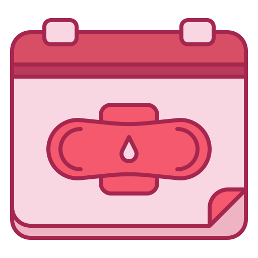
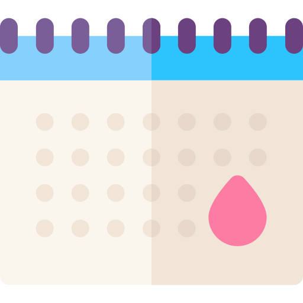

<script src="user-dashboard.component.ts"></script>
<mat-drawer-container class="example-container" id="user-dashboard">
  <mat-drawer
    class="side-form"
    [(opened)]="openedForm"
    #drawer
    position="end"
    mode="over"
  >
    <div class="stepper-container">
      <div class="form-title">
        <h1>
          Registros diarios<mat-icon class="info-form-icon">info</mat-icon>
        </h1>
        <h3>
          Recuerda que todos tus registros diarios son opcionales. <br />
          ¡Puedes ingresar datos las veces que quieras durante el día!
        </h3>
      </div>
      <mat-stepper orientation="vertical" #stepper>
        <mat-step>
          <ng-template matStepLabel>Fecha</ng-template>
          <mat-form-field
            style="padding-top: 30px; padding-bottom: -10px"
            class="example-full-width"
          >
            <mat-label>Fecha</mat-label>
            <input
              matInput
              [(ngModel)]="date"
              type="date"
              (change)="onDateChange($event)"
            />
          </mat-form-field>
        </mat-step>
        <mat-step>
          <ng-template matStepLabel>Menstruación</ng-template>
          <mat-radio-group
            [(ngModel)]="periodCycle"
            aria-label="Select an option"
            class="mat-radio-button"
          >
            <mat-radio-button value="Inicio"
              >Inicio de menstruación</mat-radio-button
            >
            <mat-radio-button value="Fin"
              >Final de menstruación</mat-radio-button
            >
            <mat-radio-button value="NA">No aplica</mat-radio-button>
          </mat-radio-group>
          <h4 style="padding-top: 10px">Cantidad</h4>
          <mat-form-field>
            <mat-label>Elige una</mat-label>
            <mat-select [(ngModel)]="periodAmount" name="nombre">
              <mat-option value="Ninguno"> Ninguno </mat-option>
              <mat-option value="Muy poco"> Muy poco </mat-option>
              <mat-option value="Poco"> Poco </mat-option>
              <mat-option value="Normal"> Normal </mat-option>
              <mat-option value="Abundante"> Abundante </mat-option>
              <mat-option value="Muy abundante"> Muy abundante </mat-option>
            </mat-select>
          </mat-form-field>
          <h4 style="padding-top: 10px">Color</h4>
          <mat-form-field>
            <mat-label>Elige uno</mat-label>
            <mat-select [(ngModel)]="periodColor">
              <mat-option value="Anaranjado">
                <div class="color-example anaranjado">Anaranjado</div>
              </mat-option>
              <mat-option value="Rojo">
                <div class="color-example rojo">Rojo</div>
              </mat-option>
              <mat-option value="Rojo pálido">
                <div class="color-example rojo-palido">Rojo pálido</div>
              </mat-option>
              <mat-option value="Otro">
                <div>Otro Color</div>
              </mat-option>
            </mat-select>
          </mat-form-field>
        </mat-step>
        <mat-step>
          <ng-template matStepLabel>Fluidos cervicales</ng-template>
          <h4 style="padding-top: 10px">Cantidad</h4>
          <mat-form-field>
            <mat-label>Elige una</mat-label>
            <mat-select [(ngModel)]="fluidAmount">
              <mat-option value="Muy seco"> Muy seco </mat-option>
              <mat-option value="Seco"> Seco </mat-option>
              <mat-option value="Húmedo"> Húmedo </mat-option>
              <mat-option value="Muy húmedo"> Muy húmedo </mat-option>
            </mat-select>
          </mat-form-field>
          <h4 style="padding-top: 10px">Color</h4>
          <mat-form-field>
            <mat-label>Elige uno</mat-label>
            <mat-select [(ngModel)]="fluidColor">
              <mat-option value="Blanco">
                <div class="color-example blanco">Blanco</div>
              </mat-option>
              <mat-option value="Transparente">
                <div class="color-example transparente">Transparente</div>
              </mat-option>
              <mat-option value="Amarillo">
                <div class="color-example amarrillo">Amarillo</div>
              </mat-option>
              <mat-option value="Verde">
                <div class="color-example verde">Verde</div>
              </mat-option>
              <mat-option value="Gris">
                <div class="color-example gris">Gris</div>
              </mat-option>
              <mat-option value="Otro">
                <div>Otro Color</div>
              </mat-option>
            </mat-select>
          </mat-form-field>
        </mat-step>
        <mat-step>
          <ng-template matStepLabel>Estado físico y emocional</ng-template>
          <h4 style="padding-top: 10px">Estado emocional general</h4>
          <div class="face-container">
            <mat-icon>sentiment_very_dissatisfied</mat-icon>
            <mat-icon>sentiment_neutral</mat-icon>
            <mat-icon>sentiment_very_satisfied</mat-icon>
          </div>
          <mat-slider
            [(ngModel)]="emotionalState"
            style="width: 350px"
            max="10"
            min="0"
            step="1"
            discrete="false"
          >
            <input matSliderThumb #slider />
          </mat-slider>

          <h4 style="padding-top: 10px">Tipo de malestar emocional</h4>
          <mat-form-field>
            <mat-label>Elige uno</mat-label>
            <mat-select [(ngModel)]="emotionType" name="nombre">
              <mat-option value="Cambios de humor">
                Cambios de humor
              </mat-option>
              <mat-option value="Ansiedad"> Ansiedad </mat-option>
              <mat-option value="Depresión"> Depresión </mat-option>
              <mat-option value="Fatiga"> Fatiga </mat-option>
              <mat-option value="Irritabilidad"> Irritabilidad </mat-option>
              <mat-option value="Estrés"> Estrés </mat-option>
            </mat-select>
          </mat-form-field>

          <h4 style="padding-top: 10px">Dolor físico</h4>
          <div class="face-container">
            <mat-icon>sentiment_very_satisfied</mat-icon>
            <mat-icon>sentiment_neutral</mat-icon>
            <mat-icon>sentiment_very_dissatisfied</mat-icon>
          </div>
          <mat-slider
            [(ngModel)]="physicalState"
            style="width: 350px"
            max="10"
            min="0"
            step="1"
            discrete="false"
          >
            <input matSliderThumb #slider />
          </mat-slider>
          <h4 style="padding-top: 10px">Tipo de dolor</h4>
          <mat-form-field>
            <mat-label>Elige uno</mat-label>
            <mat-select [(ngModel)]="painType" name="nombre">
              <mat-option value="Dolor generalizado">
                Dolor generalizado
              </mat-option>
              <mat-option value="Dolor pélvico"> Dolor pélvico </mat-option>
              <mat-option value="Dolor de cabeza"> Dolor de cabeza </mat-option>
              <mat-option value="Hinchazón abdominal">
                Hinchazón abdominal
              </mat-option>
              <mat-option value="Cólicos menstruales">
                Cólicos menstruales
              </mat-option>
              <mat-option value="Sensibilidad en mamas">
                Sensibilidad en mamas
              </mat-option>
              <mat-option value="Dolor lumbar"> Dolor lumbar </mat-option>
            </mat-select>
          </mat-form-field>
        </mat-step>
        <mat-step>
          <ng-template matStepLabel>Sueño</ng-template>
          <h4 style="padding-top: 10px">Horas totales</h4>
          <mat-form-field class="example-full-width">
            <input
              [(ngModel)]="sleepHours"
              matInput
              type="number"
              max="23"
              min="0"
              placeholder="Horas"
              value="Sushi"
            />
          </mat-form-field>
        </mat-step>
        <mat-step>
          <ng-template matStepLabel>Temperatura</ng-template>
          <h4 style="padding-top: 10px">Temperatura corporal actual</h4>
          <p *ngIf="hasDevice" style="color: gray">
            Temperatura registrada a través del dispositivo
          </p>
          <mat-form-field name="temp" class="example-full-width">
            <input
              [(ngModel)]="temperature"
              step="0.01"
              matInput
              type="number"
              max="42.00"
              min="35.00"
              placeholder="Temperatura(°C)"
              [disabled]="hasDevice"
            />
          </mat-form-field>
        </mat-step>
        <mat-step>
          <ng-template matStepLabel>Medicamentos</ng-template>
          <section class="example-section">
            <h4>Seleccione sus medicamentos:</h4>
            <p *ngFor="let medication of medications">
              <mat-checkbox
                (change)="onMedicinasClick($event, medication)"
                [checked]="medOpcionesChecked.includes(medication.name)"
              >
                {{ medication.name }}
              </mat-checkbox>
            </p>
          </section>
        </mat-step>
        <mat-step>
          <ng-template matStepLabel>Vida sexual</ng-template>
          <mat-form-field>
            <mat-label>Elige uno</mat-label>
            <mat-select [(ngModel)]="sexTimes" name="nombre">
              <mat-option value="Sexo con protección">
                Sexo con protección
              </mat-option>
              <mat-option value="Sexo sin protección">
                Sexo sin protección
              </mat-option>
              <mat-option value="Deseo sexual alto">
                Deseo sexual alto
              </mat-option>
              <mat-option value="Deseo sexual bajo">
                Deseo sexual bajo
              </mat-option>
              <mat-option value="Orgasmo"> Orgasmo </mat-option>
              <mat-option value="Sin orgasmo"> Sin orgasmo </mat-option>
              <mat-option value="sexo con dolor"> Sexo con dolor </mat-option>
              <mat-option value="Sexo sin dolor"> Sexo sin dolor </mat-option>
              <mat-option value="Coito interrumpido">
                Coito interrumpido
              </mat-option>
              <mat-option value="Uso de juguetes sexuales">
                Uso de juguetes sexuales
              </mat-option>
            </mat-select>
          </mat-form-field>
        </mat-step>
      </mat-stepper>
      <div class="stepper-form-buttons-container">
        <button
          (click)="send()"
          style="
            width: 250px;
            padding-top: 10px;
            padding-bottom: 15px;
            border-radius: 0;
            background-color: #3f51b5 !important;
          "
          mat-raised-button
          color="primary"
        >
          Guardar
        </button>
        <button
          (click)="closeForm()"
          style="
            background-color: #dddd;
            border-radius: 0;
            padding-top: 10px;
            padding-bottom: 15px;
            width: 250px;
          "
          mat-button
        >
          Cancelar
        </button>
      </div>
    </div>
  </mat-drawer>
  <mat-drawer-content id="form-container">
    <div class="info-section">
      <div class="cards-section">
        <mat-card class="data-card">
          <mat-card-content>
            <div class="card-dashboard">
              
              <h2>Duración promedio de menstruación</h2>
            </div>
            <div class="divider"></div>
            <p>{{ periodAverageDuration }}</p>
          </mat-card-content>
        </mat-card>
        <mat-card class="data-card">
          <mat-card-content>
            <div class="card-dashboard">
              
              <h2>Variación promedio del ciclo femenino</h2>
            </div>
            <div class="divider"></div>
            <p>{{ averagePeriodVariation }}</p>
          </mat-card-content>
        </mat-card>
        <mat-card class="data-card">
          <mat-card-content>
            <div class="card-dashboard">
              
              <h2>Inicio de próxima menstruación</h2>
            </div>
            <div class="divider"></div>
            <p *ngIf="nextPeriod">{{ nextPeriod | date : "dd/MM/yyyy" }}</p>
            <p *ngIf="!nextPeriod">No hay suficientes datos.</p>
          </mat-card-content>
        </mat-card>
        <mat-card class="data-card">
          <mat-card-content>
            <div class="card-dashboard">
              
              <h2>Próximos posibles días fértiles</h2>
            </div>
            <div class="divider"></div>
            <p *ngIf="firstFertileDay">
              {{ firstFertileDay | date : "dd/MM/yyyy" }} -
              {{ lastFertileDay | date : "dd/MM/yyyy" }}
            </p>
            <p *ngIf="noFertileDays">{{ noFertileDays }}</p>
          </mat-card-content>
        </mat-card>
      </div>
      <div class="graphs-section">
        <!--
          <mat-card style="margin-bottom: 30px;">
            <mat-card-content style="padding-right: 30px;">
              <ibm-stacked-area-chart *ngIf="!loading" [data]="dataLineal" [options]="optionsLineal">
              </ibm-stacked-area-chart>
            </mat-card-content>
          </mat-card>
          -->
        <!----->
        <div id="temperatura">
          <button
            class="capture-button"
            (click)="captureAndDownload('temperatura')"
            mat-icon-button
            style="position: relative; top: 40px; z-index: 2; left: 93%"
          >
            <mat-icon>open_in_new</mat-icon>
          </button>
          <mat-card style="border-left: #f25287 6px solid">
            <mat-card-content>
              <ibm-area-chart
                *ngIf="!loading"
                [data]="dataSpike2"
                [options]="optionsSpike2"
              ></ibm-area-chart>
            </mat-card-content>
          </mat-card>
        </div>

        <!----->
        <div id="flujo">
          <button
            class="capture-button"
            (click)="captureAndDownload('flujo')"
            mat-icon-button
            style="position: relative; top: 40px; z-index: 2; left: 93%"
          >
            <mat-icon>open_in_new</mat-icon>
          </button>
          <mat-card style="border-left: #f25287 6px solid">
            <mat-card-content style="padding-right: 30px">
              <ibm-area-chart
                *ngIf="!loading"
                [data]="dataSpike"
                [options]="optionsSpike"
              ></ibm-area-chart>
            </mat-card-content>
          </mat-card>
        </div>
      </div>
      <div class="graph-emotions-physical">
        <div id="sueno">
          <button
            class="capture-button"
            (click)="captureAndDownload('sueno')"
            mat-icon-button
            style="position: relative; top: 40px; z-index: 2; left: 93%"
          >
            <mat-icon>open_in_new</mat-icon>
          </button>
          <mat-card
            class="card"
            style="margin-bottom: 35px; border-left: #f25287 6px solid"
          >
            <mat-card-content style="padding-right: 30px">
              <ibm-simple-bar-chart
                [data]="dataCircle"
                *ngIf="!loading"
                [options]="optionsCircle"
              ></ibm-simple-bar-chart>
            </mat-card-content>
          </mat-card>
        </div>
        <mat-accordion class="graph-accordion">
          <mat-expansion-panel
            [expanded]="true"
            style="justify-content: center; border-left: #f25287 6px solid"
            (opened)="(panelOpenState == true)"
            (closed)="(panelOpenState == false)"
          >
            <mat-expansion-panel-header>
              <mat-panel-title> Estado físico </mat-panel-title>
            </mat-expansion-panel-header>
            <div id="estadoFisico">
              <button
                class="capture-button"
                (click)="captureAndDownload('estadoFisico')"
                mat-icon-button
                style="
                  position: relative;

                  z-index: 2;
                  left: 93%;
                "
              >
                <mat-icon>open_in_new</mat-icon>
              </button>
              <ibm-radar-chart
                *ngIf="!loading"
                [data]="dataRadarPain"
                [options]="optionsRadar"
              ></ibm-radar-chart>
            </div>
          </mat-expansion-panel>
          <mat-expansion-panel
            style="border-left: #f25287 6px solid"
            (opened)="(panelOpenState == false)"
            (closed)="(panelOpenState == true)"
          >
            <mat-expansion-panel-header>
              <mat-panel-title> Estado emocional </mat-panel-title>
            </mat-expansion-panel-header>
            <div id="estadoFisico">
              <button
                class="capture-button"
                (click)="captureAndDownload('estadoFisico')"
                mat-icon-button
                style="
                  position: relative;

                  z-index: 2;
                  left: 93%;
                "
              >
                <mat-icon>open_in_new</mat-icon>
              </button>
              <ibm-radar-chart
                *ngIf="!loading"
                [data]="dataRadarEmotion"
                [options]="optionsRadar"
              ></ibm-radar-chart>
            </div>
          </mat-expansion-panel>
        </mat-accordion>
      </div>
    </div>
    <button
      id="form-button"
      style="
        position: fixed;
        width: 60px;
        height: 60px;
        color: white;
        font-size: 40px;
        background-color: #f25287;
        border-radius: 50%;
        bottom: 20px;
        right: 60px;
      "
      mat-raised-button
      (click)="drawer.toggle()"
    >
      +
    </button>
  </mat-drawer-content>
</mat-drawer-container>
